তারিখ: ২২ সেপ্টেম্বর ২০২৬ · সংস্করণ: ক্যাশ মেইনটেনেন্স আলাদা মেনু
| কী ঘটছে | কোথায় দেবেন | ক্যাশে প্রভাব | প্রফিটে প্রভাব | ভেন্ডর বাকি / স্টক |
|---|---|---|---|---|
| ভেন্ডর থেকে মাল কেনা | Purchase | নেই | নেই | বাকি ও স্টক বদলায় |
| পণ্য কেনার টাকা দেওয়া (ক্যাশ কমবে) | Cash Maintenance → পণ্য ক্রয় | ক্যাশ কমে | নেই | — |
| পাউচ / প্যাকেট কেনার টাকা | Cash Maintenance → পাউচ / প্যাকেট | ক্যাশ কমে | নেই | — |
| ডিপো ভাড়া | Cash Maintenance → ডিপো ভাড়া | ক্যাশ কমে | নেই | — |
| ডিলার পয়েন্ট / গাজীপুর থেকে টাকা পাওয়া | Cash Maintenance → ক্যাশ ইন | ক্যাশ বাড়ে | নেই | — |
| সাধারণ পরিচালন খরচ (বেতন, পরিবহন…) | Expenses | ক্যাশ কমে | প্রফিট কমে | — |
ক্যাশ এন্ট্রি দেওয়ার ফর্ম — ওপরে তিনটি বাটন, নিচে পরিমাণ ও তারিখ:
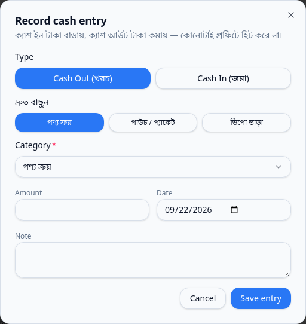
| নং | বিষয় | টেস্ট ডেটা | যা হওয়ার কথা | ফল |
|---|---|---|---|---|
| পারচেজ | ||||
| A1 | নতুন পারচেজ (মোট ১,০০০, জমা ৪০০) সেভ করা | ভেন্ডর: Ibrahim Store · ইবসগুল ভূষি 18 গ্রাম ১০ Kg × ৳১০০ · জমা ৳৪০০ | তালিকায় মোট ১,০০০ / জমা ৪০০ / বাকি ৬০০; ভেন্ডরের বাকি +৬০০; মেটেরিয়াল স্টক +১০ (30 Kg); ক্যাশে কিছু আসবে না | ✔ সফল |
| A2 | ভেন্ডরকে বাকি ৬০০ পরিশোধ | পেমেন্ট ৳৬০০ | বাকি ০ হবে; ভেন্ডরের মোট বাকি আগের অবস্থায় ফিরবে; ক্যাশে কিছু আসবে না | ✔ সফল |
| A3 | পারচেজ এডিট (রেট ১০০ → ১২০) | নতুন মোট ৳১,২০০ | তালিকায় মোট ১,২০০ দেখাবে; স্টক অপরিবর্তিত (30 Kg); ক্যাশে কিছু আসবে না | ✔ সফল |
| A4 | পারচেজ ডিলিট | — | তালিকা থেকে চলে যাবে; ভেন্ডরের বাকি, মোট ক্রয় ও মেটেরিয়াল স্টক (20 Kg) আগের অবস্থায় ফিরবে | ✔ সফল |
| ক্যাশ মেইনটেনেন্স | ||||
| B1 | ক্যাশ আউট — কুইক বাটন "পণ্য ক্রয়" | ৳৫,০০০ · কুইক বাটন | ক্যাশ ইন 0 · ক্যাশ আউট 5,000 · নিট ক্যাশ 826,999 | ✔ সফল |
| B2 | ক্যাশ আউট — কুইক বাটন "পাউচ / প্যাকেট" | ৳২,০০০ · ক্যাটাগরি: প্যাকেজিং মেটেরিয়ালস ক্রয় | ক্যাশ ইন 0 · ক্যাশ আউট 7,000 · নিট ক্যাশ 824,999 | ✔ সফল |
| B3 | ক্যাশ আউট — কুইক বাটন "ডিপো ভাড়া" | ৳৩,০০০ | ক্যাশ ইন 0 · ক্যাশ আউট 10,000 · নিট ক্যাশ 821,999 | ✔ সফল |
| B4 | ক্যাশ আউট — ড্রপডাউন থেকে অন্য খাত (অফিস খরচ) | ৳৫০০ | ক্যাশ ইন 0 · ক্যাশ আউট 10,500 · নিট ক্যাশ 821,499 | ✔ সফল |
| B5 | ক্যাশ ইন — "অন্যান্য ক্যাশ জমা" | ৳৪,০০০ | ক্যাশ ইন 4,000 · ক্যাশ আউট 10,500 · নিট ক্যাশ 825,499 | ✔ সফল |
| B6 | খাতভিত্তিক সামারি ও এন্ট্রি তালিকা | B1–B5 এর এন্ট্রি | পাঁচটা টেস্ট এন্ট্রিই তালিকায় দেখাবে; চার খাতই সামারিতে থাকবে | ✔ সফল |
| B7 | দৈনিক (Daily) ভিউ — ১৫ জানুয়ারি ২০৩০ | তারিখ ফিল্টার | ওই দিনের ক্যাশ আউট = ৫,০০০+২,০০০+৩,০০০+৫০০ = ১০,৫০০; ক্যাশ ইন ৪,০০০ | ✔ সফল |
| B8 | Daily Cash Book-এর হিসাব (নিট ক্যাশ) | B1–B5 সব এন্ট্রি একসাথে | নিট ক্যাশ = শুরুর 831,999 + ইন ৪,০০০ − আউট ১০,৫০০ = 825,499 | ✔ সফল |
| B10 | এন্ট্রি এডিট (৫,০০০ → ৫,৫০০) | "পণ্য ক্রয়" এন্ট্রি | ক্যাশ আউট 11,000; নিট ক্যাশ 824,999 | ✔ সফল |
| B11 | পরিমাণ (Amount) ছাড়া সেভ করার চেষ্টা | Amount খালি | এন্ট্রি সেভ হবে না; ত্রুটির বার্তা দেখাবে | ✔ সফল |
| B12 | ডায়ালগ খুললে ডিফল্ট ক্যাটাগরি ও আজকের তারিখ | — | ক্যাটাগরি "পণ্য ক্রয়"; তারিখ 2026-09-22 (বাংলাদেশ সময়) | ✔ সফল |
| B13 | সব টেস্ট এন্ট্রি ডিলিট | পাঁচটাই | ক্যাশ আউট 0, ক্যাশ ইন 0, নিট ক্যাশ 831,999 — শুরুর অবস্থায় ফিরবে | ✔ সফল |
| প্রফিটে প্রভাব | ||||
| B9 | ক্যাশ এন্ট্রি নিট প্রফিটে হিট করে না | B1–B5 এন্ট্রি অবস্থায় Company Earnings | মোট খরচ 307,933 ও নিট প্রফিট 78,196.398 অপরিবর্তিত | ✔ সফল |
| C1 | তুলনা: সাধারণ Expense (৳৭০০) প্রফিটে হিট করে | Expenses পেজ থেকে ৳৭০০ | মোট খরচ +৭০০ (308,633); নিট প্রফিট −৭০০ (77,496.398) | ✔ সফল |
| টেস্ট ডেটা | ভেন্ডর: Ibrahim Store · ইবসগুল ভূষি 18 গ্রাম ১০ Kg × ৳১০০ · জমা ৳৪০০ |
|---|---|
| যা হওয়ার কথা | তালিকায় মোট ১,০০০ / জমা ৪০০ / বাকি ৬০০; ভেন্ডরের বাকি +৬০০; মেটেরিয়াল স্টক +১০ (30 Kg); ক্যাশে কিছু আসবে না |
| আসলে যা হয়েছে | তালিকায় মোট ৳1,000.00 · জমা ৳400.00 · বাকি ৳600.00 | ভেন্ডরের মোট বাকি 348,090 → 348,690 | স্টক 20 → 30 Kg | ক্যাশ আউট 0 → 0 |
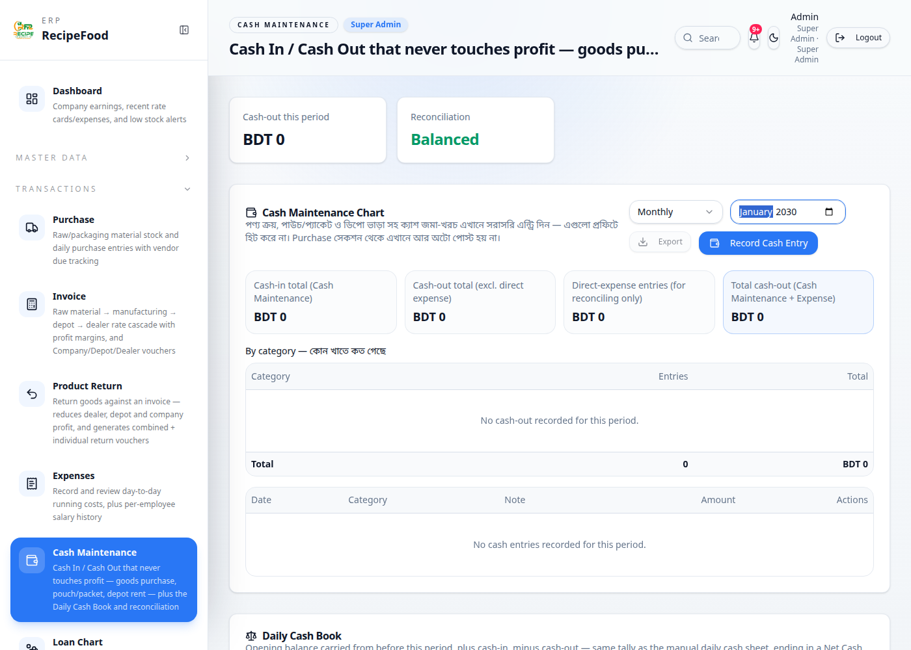
| টেস্ট ডেটা | পেমেন্ট ৳৬০০ |
|---|---|
| যা হওয়ার কথা | বাকি ০ হবে; ভেন্ডরের মোট বাকি আগের অবস্থায় ফিরবে; ক্যাশে কিছু আসবে না |
| আসলে যা হয়েছে | তালিকায় মোট ৳1,000.00 · জমা ৳1,000.00 · বাকি ৳0.00 | ভেন্ডরের মোট বাকি 348,090 (শুরুতে 348,090) | ক্যাশ আউট 0 |
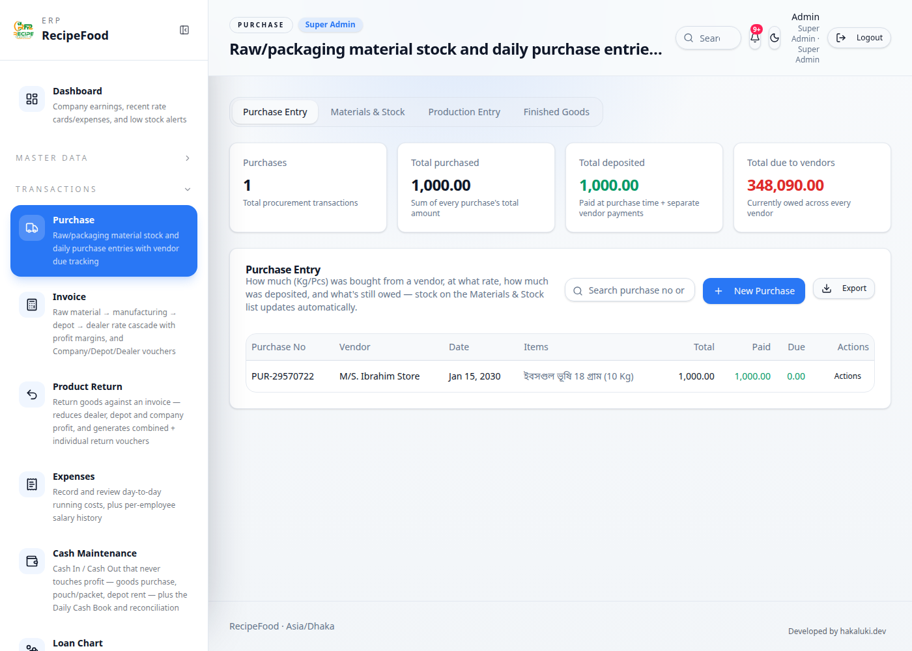
| টেস্ট ডেটা | নতুন মোট ৳১,২০০ |
|---|---|
| যা হওয়ার কথা | তালিকায় মোট ১,২০০ দেখাবে; স্টক অপরিবর্তিত (30 Kg); ক্যাশে কিছু আসবে না |
| আসলে যা হয়েছে | তালিকায় মোট ৳1,200.00 · জমা ৳1,000.00 · বাকি ৳200.00 | স্টক 30 Kg | ক্যাশ আউট 0 |
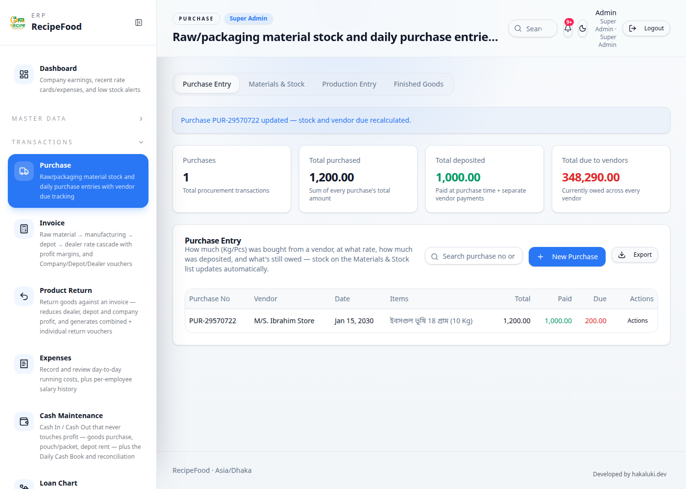
| টেস্ট ডেটা | — |
|---|---|
| যা হওয়ার কথা | তালিকা থেকে চলে যাবে; ভেন্ডরের বাকি, মোট ক্রয় ও মেটেরিয়াল স্টক (20 Kg) আগের অবস্থায় ফিরবে |
| আসলে যা হয়েছে | তালিকায় নেই: true | বাকি 348,090 (শুরুতে 348,090) | মোট ক্রয় 0 (শুরুতে 0) | স্টক 20 Kg |
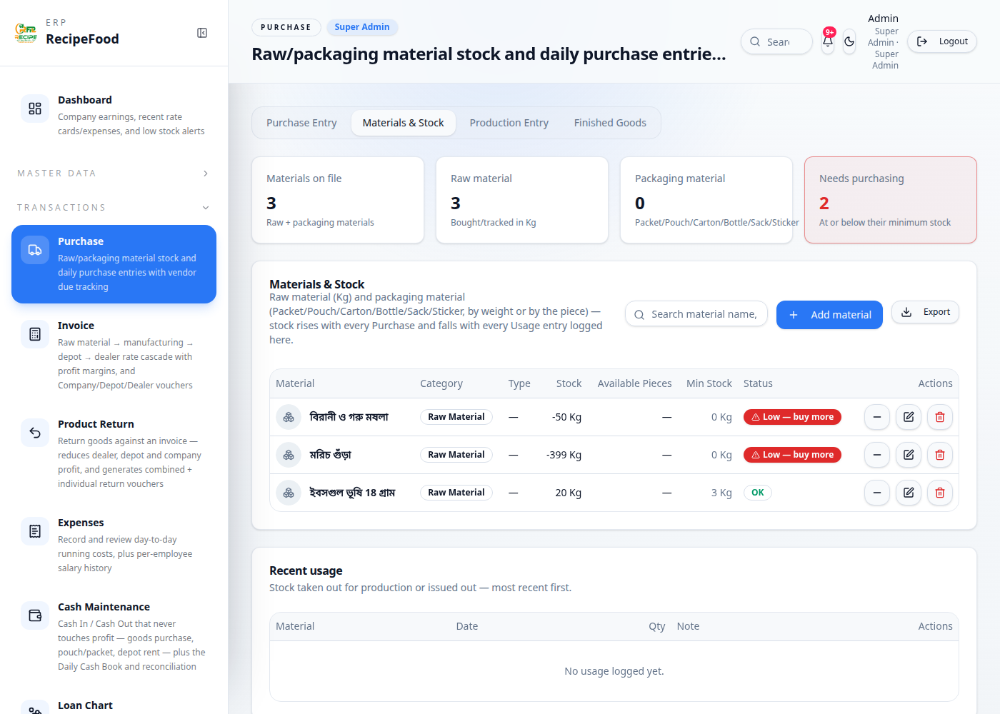
| টেস্ট ডেটা | ৳৫,০০০ · কুইক বাটন |
|---|---|
| যা হওয়ার কথা | ক্যাশ ইন 0 · ক্যাশ আউট 5,000 · নিট ক্যাশ 826,999 |
| আসলে যা হয়েছে | ক্যাশ ইন 0 · ক্যাশ আউট 5,000 · নিট ক্যাশ 826,999 |
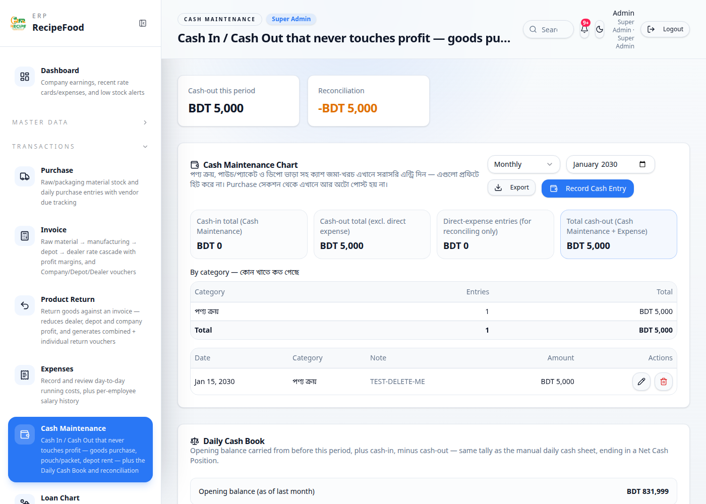
| টেস্ট ডেটা | ৳২,০০০ · ক্যাটাগরি: প্যাকেজিং মেটেরিয়ালস ক্রয় |
|---|---|
| যা হওয়ার কথা | ক্যাশ ইন 0 · ক্যাশ আউট 7,000 · নিট ক্যাশ 824,999 |
| আসলে যা হয়েছে | ক্যাশ ইন 0 · ক্যাশ আউট 7,000 · নিট ক্যাশ 824,999 |
| টেস্ট ডেটা | ৳৩,০০০ |
|---|---|
| যা হওয়ার কথা | ক্যাশ ইন 0 · ক্যাশ আউট 10,000 · নিট ক্যাশ 821,999 |
| আসলে যা হয়েছে | ক্যাশ ইন 0 · ক্যাশ আউট 10,000 · নিট ক্যাশ 821,999 |
| টেস্ট ডেটা | ৳৫০০ |
|---|---|
| যা হওয়ার কথা | ক্যাশ ইন 0 · ক্যাশ আউট 10,500 · নিট ক্যাশ 821,499 |
| আসলে যা হয়েছে | ক্যাশ ইন 0 · ক্যাশ আউট 10,500 · নিট ক্যাশ 821,499 |
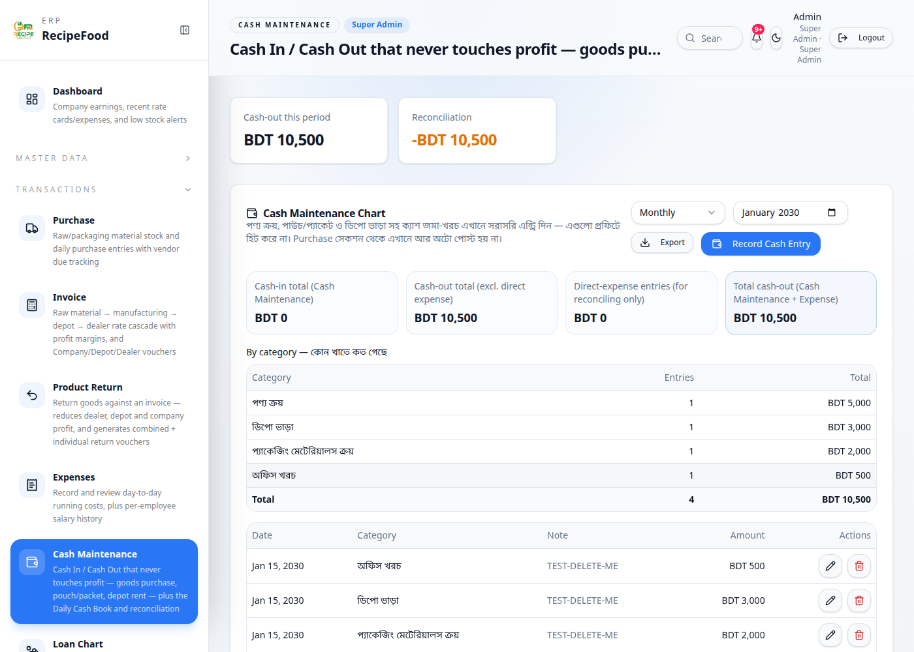
| টেস্ট ডেটা | ৳৪,০০০ |
|---|---|
| যা হওয়ার কথা | ক্যাশ ইন 4,000 · ক্যাশ আউট 10,500 · নিট ক্যাশ 825,499 |
| আসলে যা হয়েছে | ক্যাশ ইন 4,000 · ক্যাশ আউট 10,500 · নিট ক্যাশ 825,499 |
| টেস্ট ডেটা | B1–B5 এর এন্ট্রি |
|---|---|
| যা হওয়ার কথা | পাঁচটা টেস্ট এন্ট্রিই তালিকায় দেখাবে; চার খাতই সামারিতে থাকবে |
| আসলে যা হয়েছে | টেস্ট সারি 5টা; খাত পাওয়া গেছে: 4/৪ |
| টেস্ট ডেটা | তারিখ ফিল্টার |
|---|---|
| যা হওয়ার কথা | ওই দিনের ক্যাশ আউট = ৫,০০০+২,০০০+৩,০০০+৫০০ = ১০,৫০০; ক্যাশ ইন ৪,০০০ |
| আসলে যা হয়েছে | ক্যাশ আউট 10,500 · ক্যাশ ইন 4,000 |
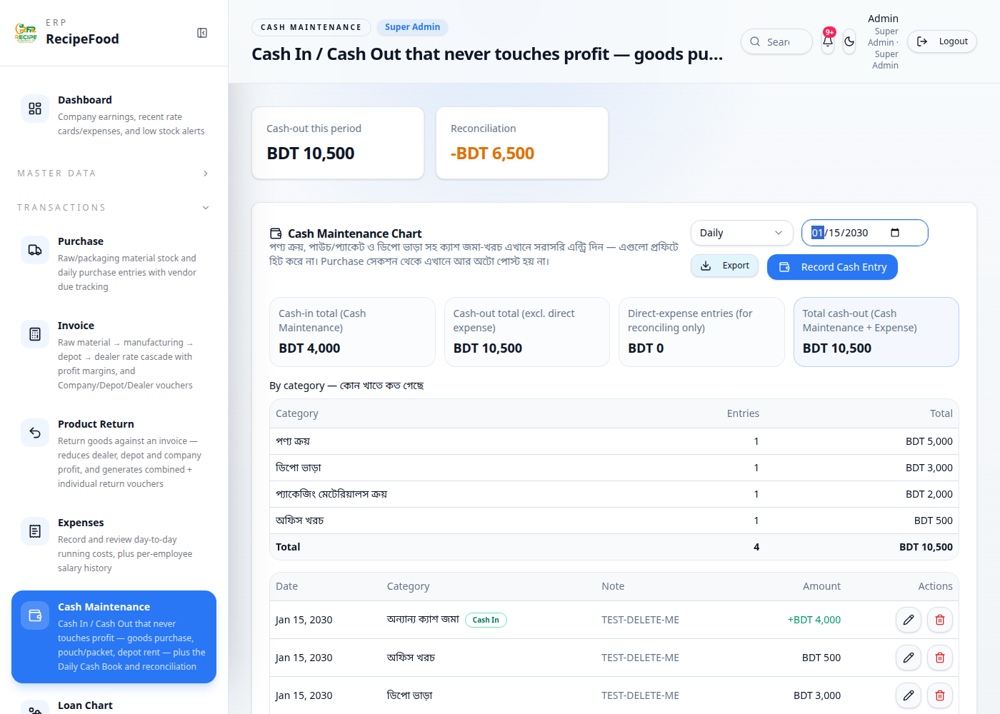
| টেস্ট ডেটা | B1–B5 সব এন্ট্রি একসাথে |
|---|---|
| যা হওয়ার কথা | নিট ক্যাশ = শুরুর 831,999 + ইন ৪,০০০ − আউট ১০,৫০০ = 825,499 |
| আসলে যা হয়েছে | নিট ক্যাশ 825,499 |
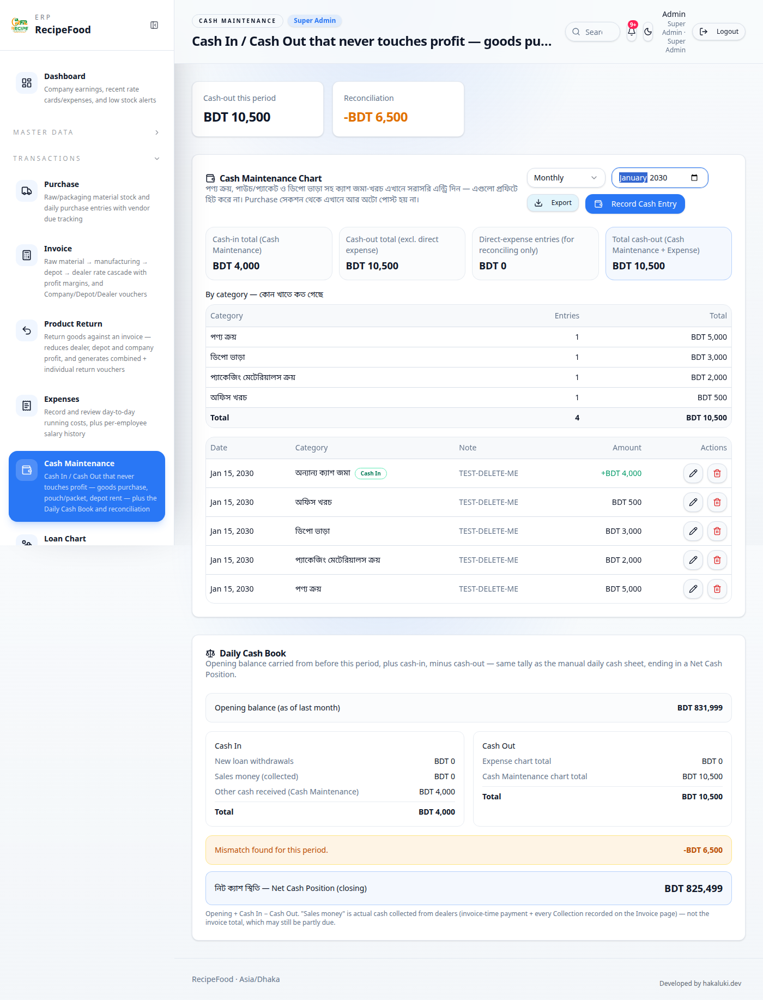
| টেস্ট ডেটা | B1–B5 এন্ট্রি অবস্থায় Company Earnings |
|---|---|
| যা হওয়ার কথা | মোট খরচ 307,933 ও নিট প্রফিট 78,196.398 অপরিবর্তিত |
| আসলে যা হয়েছে | মোট খরচ 307,933 · নিট প্রফিট 78,196.398 |
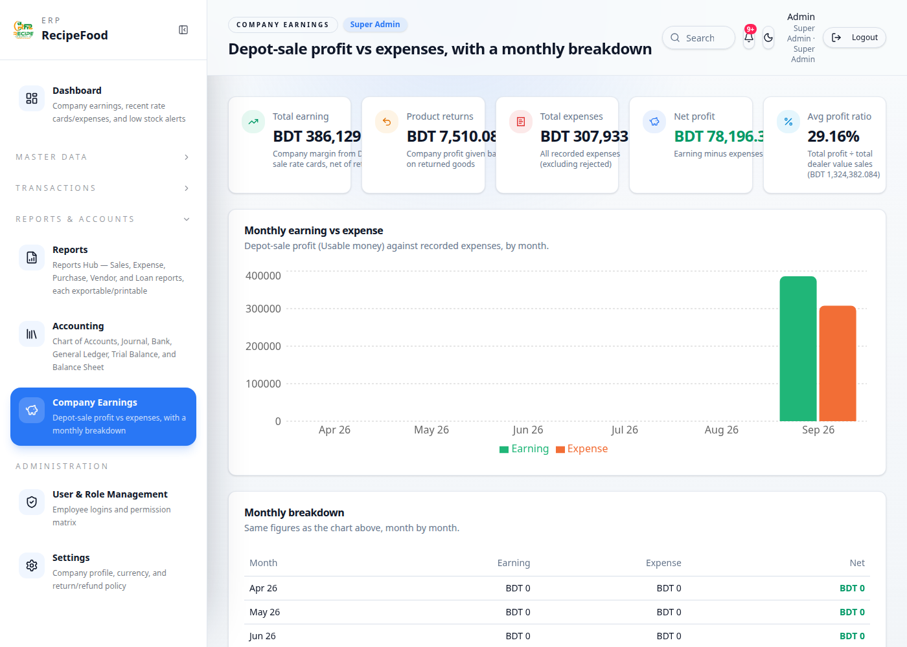
| টেস্ট ডেটা | "পণ্য ক্রয়" এন্ট্রি |
|---|---|
| যা হওয়ার কথা | ক্যাশ আউট 11,000; নিট ক্যাশ 824,999 |
| আসলে যা হয়েছে | ক্যাশ আউট 11,000; নিট ক্যাশ 824,999 |
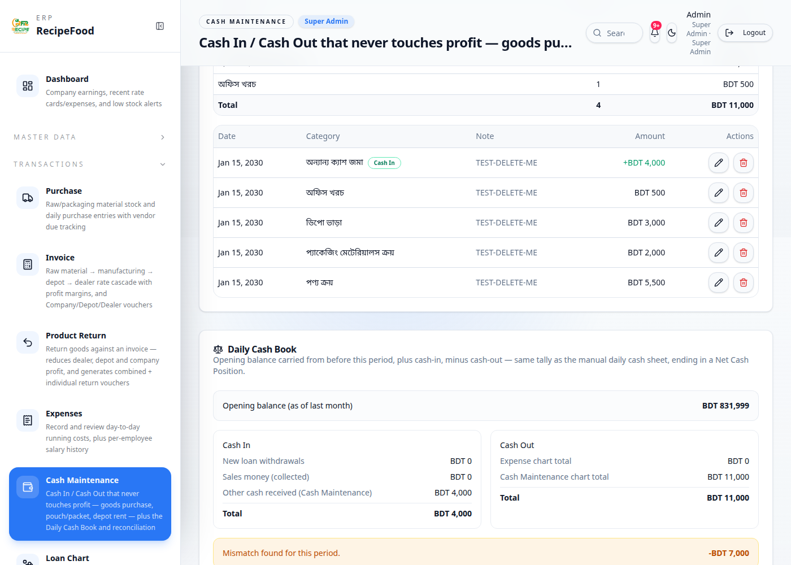
| টেস্ট ডেটা | Amount খালি |
|---|---|
| যা হওয়ার কথা | এন্ট্রি সেভ হবে না; ত্রুটির বার্তা দেখাবে |
| আসলে যা হয়েছে | ডায়ালগ খোলা থেকেছে, এন্ট্রি সেভ হয়নি; বার্তা: "Amount must be greater than zero." (পরিমাণ শূন্যের বেশি হতে হবে) |
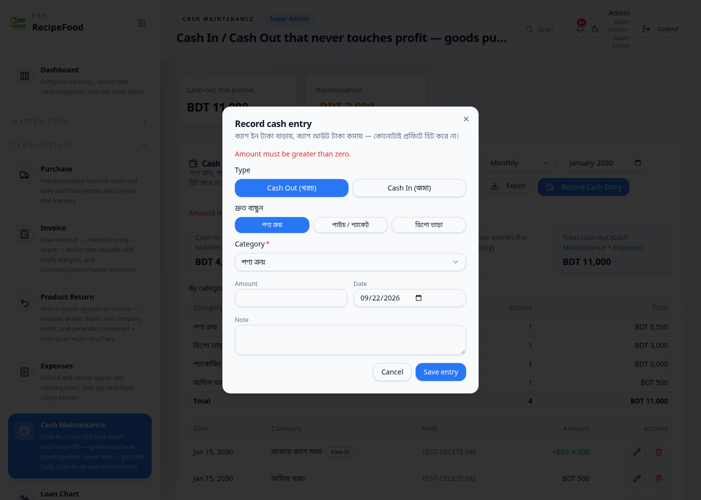
| টেস্ট ডেটা | — |
|---|---|
| যা হওয়ার কথা | ক্যাটাগরি "পণ্য ক্রয়"; তারিখ 2026-09-22 (বাংলাদেশ সময়) |
| আসলে যা হয়েছে | ক্যাটাগরি "পণ্য ক্রয়"; তারিখ 2026-09-22 |
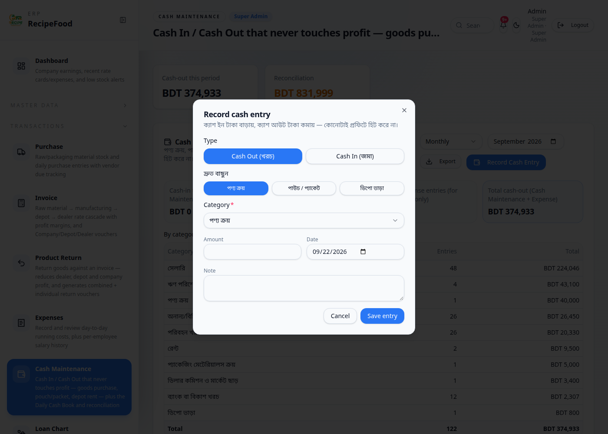
| টেস্ট ডেটা | পাঁচটাই |
|---|---|
| যা হওয়ার কথা | ক্যাশ আউট 0, ক্যাশ ইন 0, নিট ক্যাশ 831,999 — শুরুর অবস্থায় ফিরবে |
| আসলে যা হয়েছে | বাকি টেস্ট সারি 0; ক্যাশ আউট 0, ইন 0, নিট 831,999 |
| টেস্ট ডেটা | Expenses পেজ থেকে ৳৭০০ |
|---|---|
| যা হওয়ার কথা | মোট খরচ +৭০০ (308,633); নিট প্রফিট −৭০০ (77,496.398) |
| আসলে যা হয়েছে | মোট খরচ 308,633 · নিট প্রফিট 77,496.398 · Cash Maintenance-এর ক্যাশ আউট 0 (অপরিবর্তিত 0) |
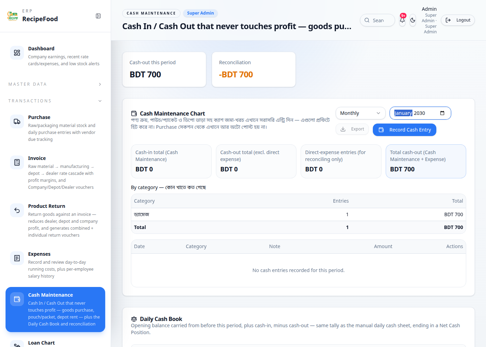
টেস্টের জন্য নিচের এন্ট্রিগুলো দেওয়া হয়েছিল। সবগুলো নোটে TEST-DELETE-ME লেখা এবং তারিখ ১৫ জানুয়ারি ২০৩০ — আপনার আসল হিসাবের কোনো মাসে পড়ে না।
| # | ধরন | বিবরণ | তারিখ | নোট |
|---|---|---|---|---|
| 1 | পারচেজ | ভেন্ডর: M/S. Ibrahim Store · মেটেরিয়াল: ইবসগুল ভূষি 18 গ্রাম (১০ Kg × ৳১০০) · মোট ৳1,000, জমা ৳400, বাকি ৳600 | ১৫ জানুয়ারি ২০৩০ | TEST-DELETE-ME |
| 2 | ভেন্ডর পেমেন্ট | বাকি পরিশোধ ৳600 | ১৫ জানুয়ারি ২০৩০ | TEST-DELETE-ME |
| 3 | ক্যাশ মেইনটেনেন্স | ক্যাশ আউট · পণ্য ক্রয় · ৳5,000 | ১৫ জানুয়ারি ২০৩০ | TEST-DELETE-ME |
| 4 | ক্যাশ মেইনটেনেন্স | ক্যাশ আউট · পাউচ / প্যাকেট · ৳2,000 | ১৫ জানুয়ারি ২০৩০ | TEST-DELETE-ME |
| 5 | ক্যাশ মেইনটেনেন্স | ক্যাশ আউট · ডিপো ভাড়া · ৳3,000 | ১৫ জানুয়ারি ২০৩০ | TEST-DELETE-ME |
| 6 | ক্যাশ মেইনটেনেন্স | ক্যাশ আউট · অফিস খরচ · ৳500 | ১৫ জানুয়ারি ২০৩০ | TEST-DELETE-ME |
| 7 | ক্যাশ মেইনটেনেন্স | ক্যাশ ইন · অন্যান্য ক্যাশ জমা · ৳4,000 | ১৫ জানুয়ারি ২০৩০ | TEST-DELETE-ME |
| 8 | Expense | সাধারণ খরচ (Expense) ৳700 — শুধু তুলনার জন্য | ১৫ জানুয়ারি ২০৩০ | TEST-DELETE-ME |
টেস্ট শেষে সব মুছে ফেলার পর হিসাব আগের অবস্থায় ফিরেছে কিনা:
| হিসাব | টেস্টের আগে | টেস্ট শেষে (মুছে ফেলার পর) | ফল |
|---|---|---|---|
| ক্যাশ ইন (জানুয়ারি ২০৩০) | 0 | 0 | ✔ একই |
| ক্যাশ আউট (জানুয়ারি ২০৩০) | 0 | 0 | ✔ একই |
| নিট ক্যাশ স্থিতি | 831,999 | 831,999 | ✔ একই |
| মোট খরচ (Expense) — Company Earnings | 307,933 | 307,933 | ✔ একই |
| নিট প্রফিট — Company Earnings | 78,196.398 | 78,196.398 | ✔ একই |
| ভেন্ডরের মোট বাকি | 348,090 | 348,090 | ✔ একই |
| মেটেরিয়াল স্টক (ইবসগুল ভূষি, Kg) | 20 | 20 | ✔ একই |
টেস্ট চালানোর সময়: ২২/৯/২০২৬, ৪:২৮:৪১ AM (বাংলাদেশ সময়)। টেস্ট ডেটা এই রিপোর্টেই সংরক্ষিত; সফটওয়্যারে কোনো টেস্ট এন্ট্রি রাখা হয়নি।